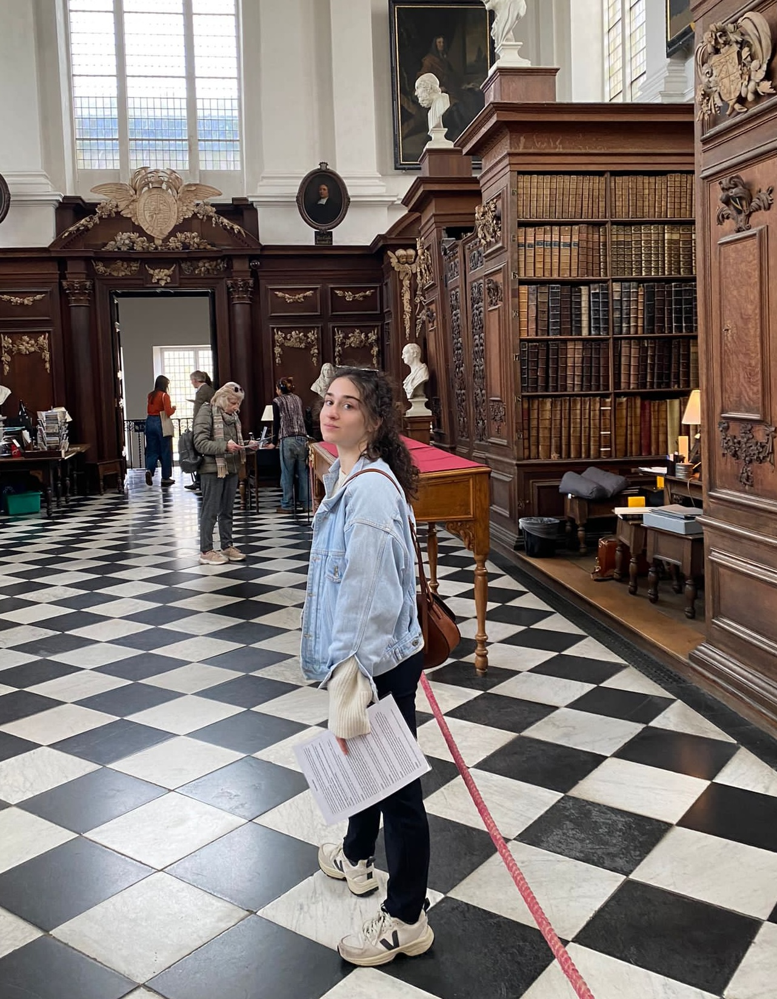
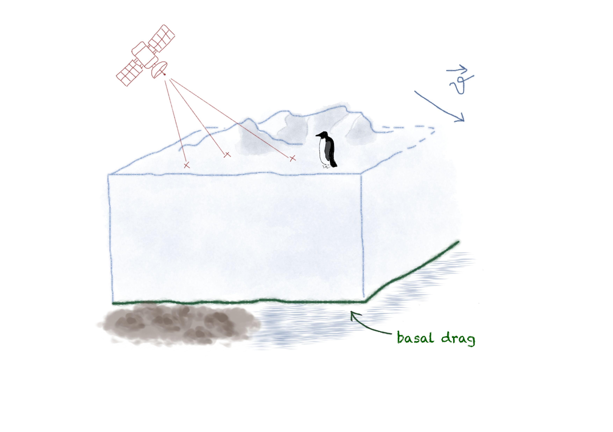

Fanny Seizilles
I am a PhD Student at the Department of Pure Mathematics and Mathematical Statistics at the University of Cambridge, supervised by Richard Nickl and Mark Girolami. I am part of the Cambridge Mathematics of Information cohort, and a member of Wolfson college. Before this I completed my training as an engineer at CentraleSupélec (part of Paris-Saclay university).
My research interests include Bayesian procedures to solve nonlinear inverse problems. I am also interested in their numerical implementations.
Email: fps25@cam.ac.uk
Office: D012 @Centre for Mathematical Sciences
